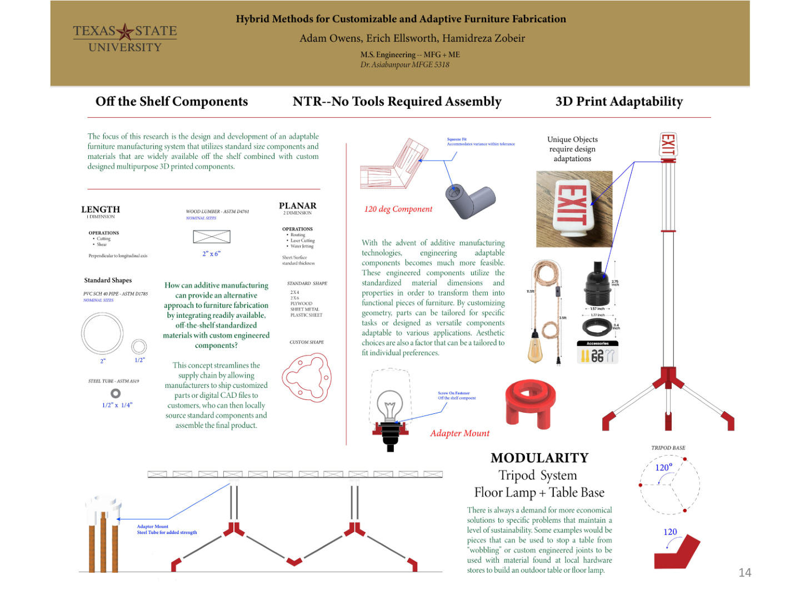
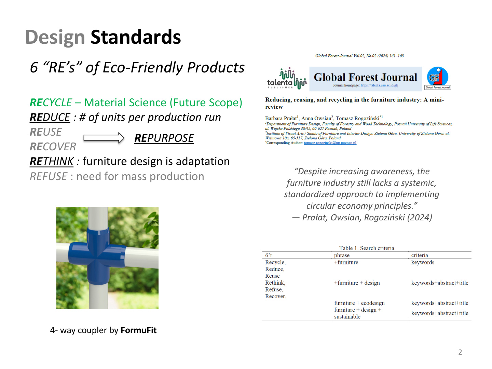
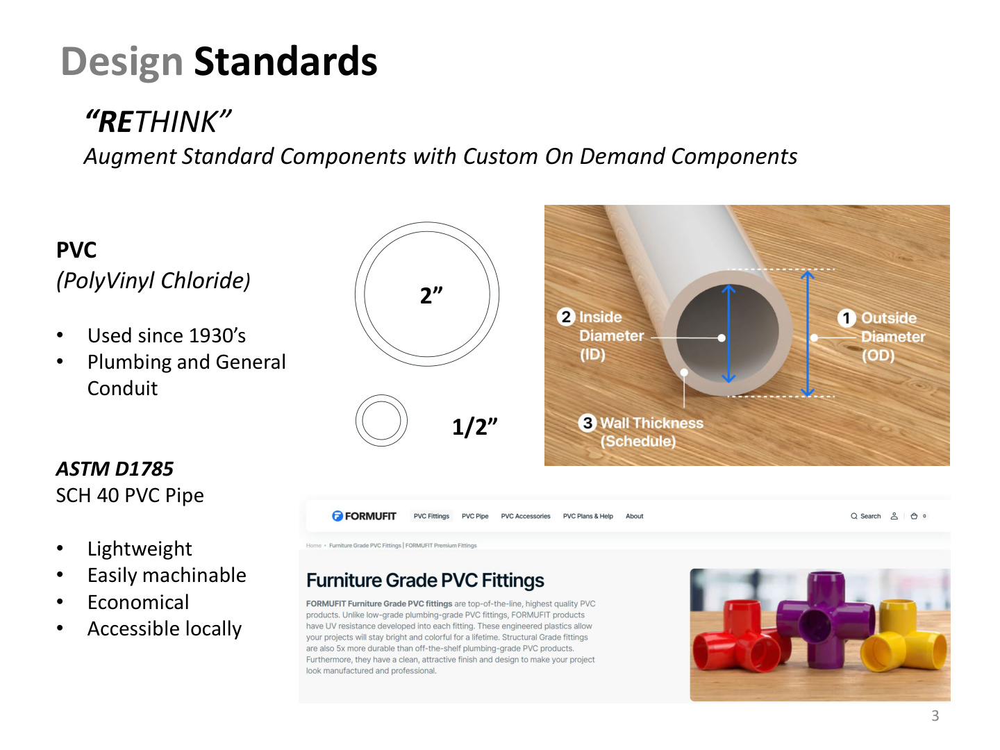
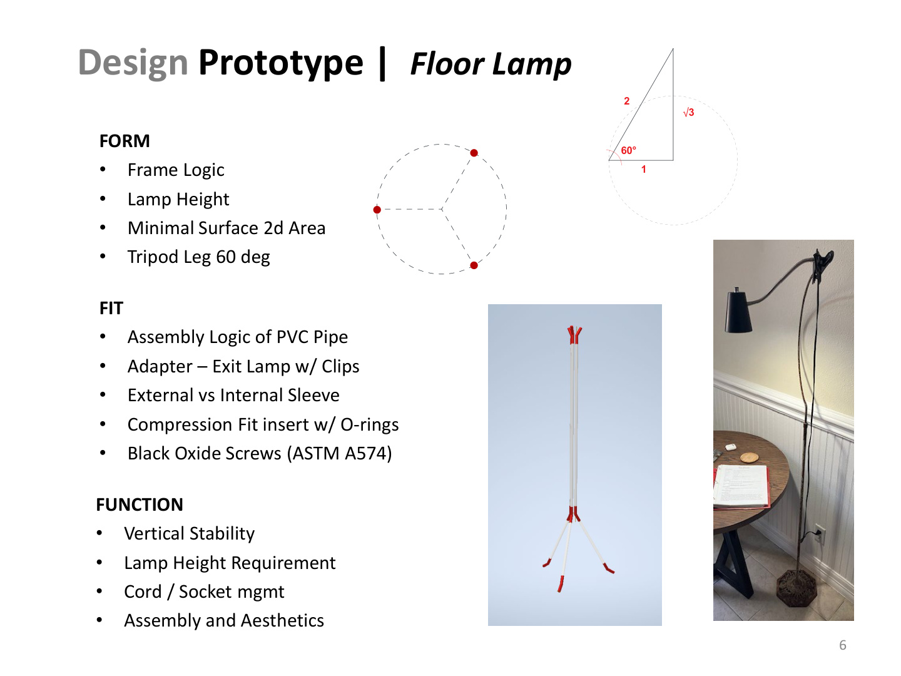
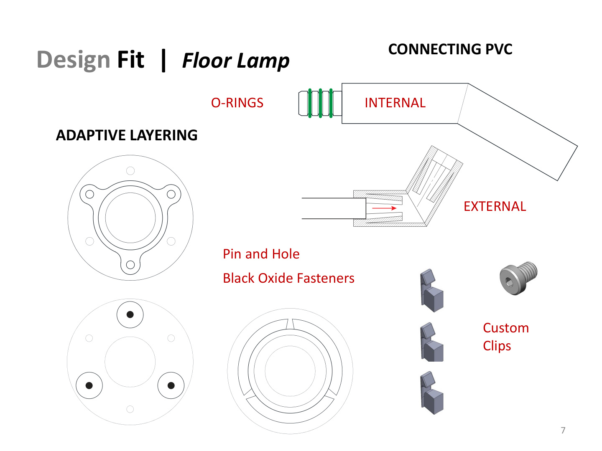
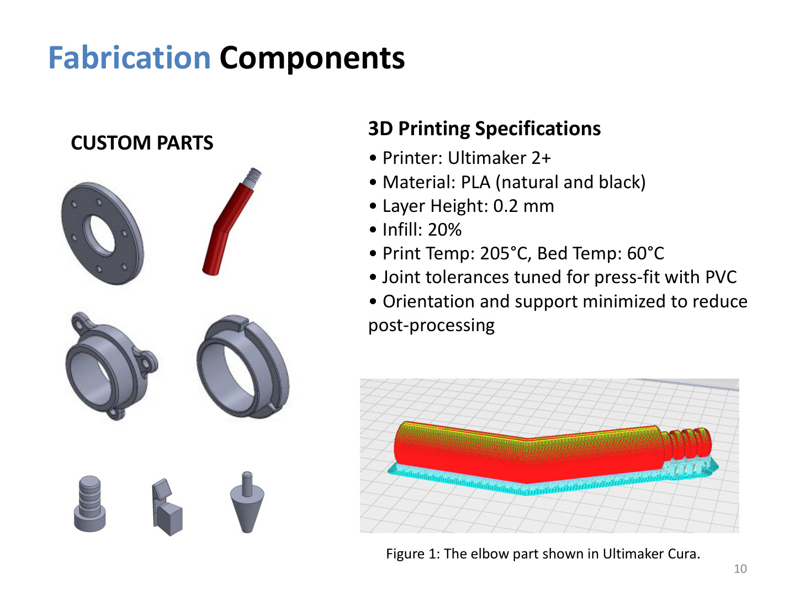
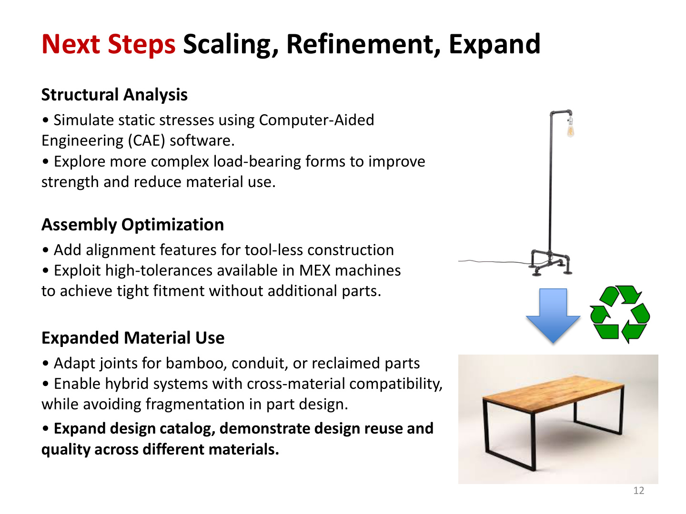

This research investigates a modular fabrication framework that combines standardized commercial materials with digitally manufactured components. Rather than designing fixed products, the project develops a reusable construction language capable of adapting to new applications through computational design, additive manufacturing, and rapid prototyping.

The project begins by reconsidering how furniture is designed and produced. Instead of manufacturing unique components for every product, standardized materials are paired with custom printed interfaces. This approach reduces waste while allowing local fabrication, repair, and continual adaptation.

Schedule 40 PVC provides an inexpensive and widely available structural framework while custom components introduce geometry-specific functionality. The system combines accessibility with computational flexibility.

The floor lamp serves as the primary proof-of-concept. Every design decision balances structural form, assembly logic, dimensional accuracy, and functional requirements while demonstrating how a small family of reusable joints can generate complete products.

Custom adapters provide the intelligence of the system. Internal and external sleeves, compression-fit interfaces, O-rings, clips, and modular fasteners allow standardized structural members to become configurable building blocks.

Each component is modeled digitally and optimized for additive manufacturing. Print orientation, tolerances, and assembly interfaces are refined through rapid iteration, creating repeatable components capable of integrating directly with standardized materials.

Future work expands the system beyond furniture into deployable structures, architectural assemblies, research equipment, and responsive environments. The modular platform provides a foundation for computational fabrication across multiple scales and material systems.